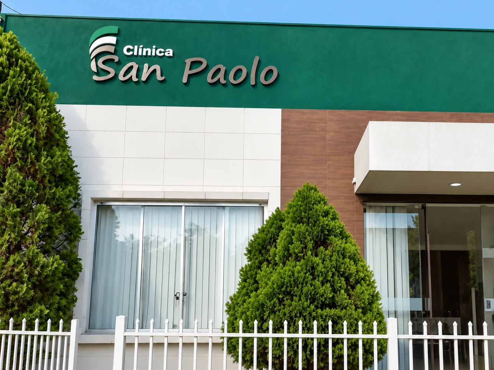

CLÍNICA SAN PAOLO · TERESINA
Cuidado com a saúde em cada fase da vida.
Conheça as especialidades da Clínica San Paolo.

NOSSAS ESPECIALIDADES
Cuidado com você em diferentes áreas da saúde.
Conheça as especialidades disponíveis na Clínica San Paolo.
Pediatria
Atendimento voltado à saúde de crianças e adolescentes.
Nutrição
Foco em promover saúde e qualidade de vida por meio de orientações alimentares personalizadas.
Psicologia
Foco na saúde mental e bem-estar psicológico.
Clínica Médica
Atendimento para cuidar da saúde de adultos, com foco na prevenção e no acompanhamento de doenças.
Gastroenterologia
Atendimento voltado à saúde do sistema digestivo, incluindo estômago, intestino e fígado.
Urologia
Atendimento voltado à saúde do sistema urinário e do sistema reprodutor masculino.
Como solicitar sua consulta.
Entre em contato:
Fale com a clínica pelo WhatsApp.
Verifique a disponibilidade:
Informe a especialidade desejada e consulte os horários disponíveis.
Combine seu atendimento:
Confirme com a equipe a data, o horário e as orientações para consulta.
Perguntas Frequentes
Como consultar a disponibilidade de horários?
Entre em contato pelo WhatsApp da Clínica e informe a especialidade desejada.
Onde fica a Clínica?
A Clínica San Paolo está localizada na Rua José Ebaid, quadra 256, casa 12 - Dirceu II, Teresina - PI.
Contato
Entre em contato para informações sobre consultas.
Rua José Ebaid, quadra 256, casa 12 - Dirceu II, Teresina - PI. CEP: 64078-275